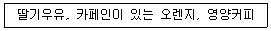
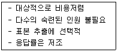

시각디자인산업기사 (2003-08-31 기출문제)
1과목: 색채학
1. 빛이 프리즘을 통과 할 때 나타는 분광현상 중 제일 굴절 현상이 큰 색채는?
- 보라
- 초록
- 빨강
- 노랑
(정답률: 알수없음)

2. 물체에 투사되는 빛이 90%이상 흡수되었을 때 나타나는 색은?
- 청색
- 흰색
- 황색
- 검정색
(정답률: 알수없음)
3. 다음 중 먼셀색상환에서 가장 인근색의 관계에 있는 것은?
- 노랑과 연두
- 주황과 파랑
- 노랑과 보라
- 노랑과 초록
(정답률: 알수없음)
4. 다음 색 중 식욕을 촉진 시키는 느낌을 주는 색채와 가장 거리가 먼 것은?
- 주황색
- 남색
- 맑은 녹색
- 맑은황색
(정답률: 알수없음)
5. 색의 자극에 의하여 그것과 관계있는 사물의 추상적 또는 구체적인 것으로 생각하는 것은?
- 상징
- 연상
- 속성
- 조화
(정답률: 알수없음)
6. KS안전색채 중 빨강이 표시하지 않는 사항은?
- 방화
- 멈춤
- 주의
- 금지
(정답률: 알수없음)
7. 교실내의 안정을 위해 흑판의 밝기는 명도 3~4가 좋은데 사용 중의 흑판의 명도는 5~6정도가 된다. 실내가 음기(陰氣)가 되지 않도록 고려할 때 벽면의 명도는 얼마로 하는 것이 가장 좋은가?
- 명도 1~2
- 명도 3~4
- 명도 6~7
- 명도 10
(정답률: 알수없음)
8. 생활과 색채에 관한 다음 설명 중 잘못된 것은?
- 색채의 지식은 전문가들 뿐만 아니라 일반인의 생활에서도 중요하다.
- 색채학의 지식은 디자인 전문가들에게만 필요하다.
- 색채의 심리적 영향력은 생활의 분위기 뿐만 아니라 생활 능률을 좌우한다.
- 색채의 효과는 정신질환 치료효과를 높이는 방법으로도 활용된다.
(정답률: 알수없음)
9. 색채의 온도에 있어서 따뜻하게 느껴지지 않는 것은?
- 적색계통
- 무채색의 경우 저명도의 색
- 유채색의 경우 고명도의 색
- 한색계의 저채도색
(정답률: 알수없음)
10. 색의 동화현상에 관한 설명 중 잘못된 것은?
- 색의 대비현상과 같은 현상으로 두가지 색을 서로 조화시키는 것이다.
- 복잡하고 섬세한 무늬에서 많이 나타나는 현상이다.
- 주위의 색의 영향으로 인접색에 가깝게 느껴지는 현상이다.
- 동화를 일으키기 위해서는 색의 영역이 하나로 종합되는 것이 필요된다.
(정답률: 알수없음)
11. 다음 혼색이론에 관한 설명 중 잘못된 것은?
- 가법혼색의 3원색은 빨강(red),녹색(green), 파랑(blue)이다.
- 가법혼색의 3원색을 동시에 혼합하면 백색광(white)이 된다.
- 감법혼색의 3원색은 노랑(yellow), 녹색(green), 마젠타(magenta)이다.
- 인쇄의 망점인 색점은 감법혼색과 동시에 병치혼색도 응용되고 있다.
(정답률: 알수없음)
12. 하나의 색상에서 무채색의 포함량이 가장 적은 색은?
- 순색
- 탁색
- 명청색
- 암청색
(정답률: 알수없음)
13. 다음 중 빛의 색을 표시할 수 있는 표색계는?
- 먼셀 표색계
- 오스트발트 표색계
- CIE 표색계
- NCS 표색계
(정답률: 알수없음)
14. 등색상의 조화(동색계의 배색)에 대한 설명 중 잘못된 것은?
- 온화하다
- 단조로와지기 쉽다.
- 명도, 채도의 차를 크게 하면 좋다.
- 어린이 방의 배색에 적합하다.
(정답률: 알수없음)
15. 다음 색채에 대한 내용이 잘못된 것은?
- 색의 밝고 어두운 정도를 명도라 한다.
- 먼셀의 색입체는 나무형이다.
- 색의 강하고 약한 정도를 색상이라 한다.
- 오스트발트 색입체는 복원추형이다.
(정답률: 알수없음)
16. 다음 색의 조화론에 관한 설명 중 틀린 것은?
- 문.스팬서 조화론에서의 미도(美度)는 배색이 복잡할수록 커진다.
- 문.스팬서 조화론에서는 먼셀표색계를 사용한다.
- 색채조화론에는 정량적인 것과 정성적인 것이 있다.
- 오스트발트 조화론은 정량적인 것이다.
(정답률: 알수없음)
17. 오스트발트는 색상환과 명도단계를 몇 등분하여 등색상 삼각형이 되게하고 이를 기본으로 색채조화의 이론을 발표하였는가?
- 24색상, 명도 10단계
- 24색상, 명도 8단계
- 20색상, 명도 7단계
- 20색상, 명도 5단계
(정답률: 알수없음)
18. 문· 스펜서의 색채조화이론에 관한 설명이 잘못된 것은?
- 조화의 종류를 동일, 유사, 대비로 구분하였다.
- 부조화의 종류를 제1부조화, 제2부조화, 눈부심으로 구분하였다.
- 면적에 따른 효과를 고려하여 스칼라 모멘트가 동일하거나 일정 배수로 설정하였다.
- 미도는 "복잡성의 요소 ÷ 질서의 요소" 이다.
(정답률: 알수없음)
19. 먼셀 기호 2.5B 4/8에서 명도 값은?
- 2.5
- 4
- 8
- 12
(정답률: 알수없음)
20. 표지판의 색을 황색 바탕에 검정으로 하는 가장 올바른 이유는?
- 황색이 경고색이므로
- 규범에 의해서
- 명시성과 가독성을 높이기 위해서
- 색상대비의 효과를 위해서
(정답률: 알수없음)
2과목: 인쇄 및 사진기법
21. 필름에서 미노출 부분의 할로겐화은을 용해하여 유출시키는 공정은?
- 현상
- 정착
- 수세
- 표백
(정답률: 알수없음)
22. 접사기구와 가장 거리가 먼 것은?
- 컨버터
- 중간링
- 벨로즈
- 클로즈업 렌즈
(정답률: 20%)
23. 광원의 색온도 중에서 주광용 광원으로서 가장 적당한 색온도 값은?
- 2,000 K
- 3,000 K
- 4,000 K
- 6,000 K
(정답률: 알수없음)
24. 그라비어 인쇄 잉크의 가장 대표적인 건조 형식은?
- 산화 중합 건조
- 침투 건조
- 증발 건조
- 냉각 건조
(정답률: 알수없음)
25. 불포화 지방산이 공기 중의 산소와 결합하여 건조되는 방식은?
- 침투 건조
- 냉각 건조
- 증발 건조
- 산화중합 건조
(정답률: 알수없음)
26. 사진 현상 순서를 가장 바르게 나타낸 것은?
- 현상→ 수세→ 정지→ 건조→ 정착
- 현상→ 정지→ 정착→ 수세→ 건조
- 현상→ 정지→ 수세→ 정착→ 건조
- 현상→ 수세→ 정지→ 정착→ 건조
(정답률: 알수없음)
27. 네거티브형 컬러 필름을 촬영 후 발색 현상액에 넣어 처리하면 어떻게 변하는가?
- 은화상만 형성된다.
- 색화상만 형성된다.
- 화상이 형성되지 않는다.
- 은화상과 동시에 색화상이 형성된다.
(정답률: 40%)
28. 사용하는 필름의 고유감도보다도 실제 촬영 감도를 높게 촬영한 후 이로 인한 노출부족을 현상시간을 연장하여 보상함으로써 필름의 감도를 높이면서도 현상은 적정이 되게하는 현상 방법은?
- 보력현상
- 감력현상
- 증감현상
- 감감현상
(정답률: 40%)
29. 가장 원시적인 인쇄방식에 의해 인쇄되는 기계는?
- 원압식 인쇄기
- 평압식 인쇄기
- 윤전식 인쇄기
- 플렉소 인쇄기
(정답률: 알수없음)
30. 다음 중 현상 주약은?
- 탄산나트륨
- 메톨
- 아황산나트륨
- 티오황산나트륨
(정답률: 알수없음)
31. 속장을 철사로 매고 등에 풀칠을 한 다음, 한장으로 된 표지로 싸거나, 2장으로 된 표지를 속장과 같이 철사로 매어 겹쳐 붙이는 제책 방식은?
- 호부장
- 양장
- 반양장
- 재래식
(정답률: 알수없음)
32. 카메라와 사람의 눈과 비교 했을 때 수정체는 카메라에서 무엇과 같은 역할을 하는가?
- 셔터
- 조리개
- 렌즈
- 필름
(정답률: 알수없음)
33. 인쇄기는 가장 정밀한 기계로서 급유의 필요성이 크다. 다음 중 급유의 필요성과 가장 거리가 먼 것은?
- 감마효과
- 냉각효과
- 속력증가효과
- 응력분산효과
(정답률: 20%)
34. 일반적으로 인쇄용으로 사용하는 인쇄용지 전지의 크기 비율로 가장 옳은 것은?
- 1 : 1
- 1 : √2
- 1 : 3
- 1 : 2
(정답률: 알수없음)
35. 빛이 어떠한 매질에서 다른 매질로 입사할 때 그 진행방향이 달라지는 현상으로 사진에 이용하는 렌즈나 프리즘도 이 성질을 이용하여 화상을 결상시키는데 이와같은 현상은?
- 반사
- 굴절
- 투과
- 편광
(정답률: 알수없음)
36. 전자 편집과 관련된 용어와 가장 관계가 없는 것은?
- CTS
- DTP
- CAE
- CPU
(정답률: 알수없음)
37. 가독성이 좋아 본문용 서체로 가장 일반적으로 사용되는 것은?
- 청조체
- 고딕체
- 명조체
- 초서체
(정답률: 알수없음)
38. 조리개에 관한 설명 중 틀린 것은?
- 렌즈를 통과하는 빛의 양을 조절한다.
- 높은 조리개 값일수록 피사계심도가 깊다.
- 높은 조리개 값일수록 빠른 셔터를 사용한다.
- 낮은 조리개 값일수록 통과하는 빛의 양이 늘어난다.
(정답률: 알수없음)
39. 어떠한 범위 이상의 외력에 대하여 변형하고, 그 외력을 없애면 변형된 그대로의 형태를 유지하는 성질은?
- 탄성
- 점성
- 요변성
- 소성
(정답률: 알수없음)
40. 인쇄기를 판식에 의해 분류한 것이 아닌 것은?
- 볼록판 인쇄기
- 윤전 인쇄기
- 평판 인쇄기
- 오목판 인쇄기
(정답률: 알수없음)
3과목: 시각디자인론
41. 다음 중 형태변화(게쉬탈트)법칙이 아닌 것은?
- 유사성
- 폐쇄성
- 개방성
- 연속성
(정답률: 알수없음)
42. 디자인 창조를 위한 사회기반의 조성으로 잘못된 것은?
- 창조성 및 주체성을 고무하기 위한 시스템 조성
- 디자인 활동 지원을 위한 정보망 구축
- 디자인 활동의 이분화
- 타분야와의 교류
(정답률: 알수없음)
43. 2차대전 후 자원과 공업력으로 전 산업분야에서 지도적 입장을 갖게된 미국은 건축, 공업디자인을 중심으로 디자인을 활성화 시켰으며, 세계적으로 제품, 생활양식까지도 영향을 주었다. 이와 관련된 것은?
- 히피 사조
- 기능주의
- 아메리칸 스타일
- 옵티칼 아트
(정답률: 알수없음)
44. 디자인 프로젝트의 관리 기준과 거리가 먼 것은?
- 이용할 정보 출처의 확인
- 디자인과 경영자와의 관계
- 제품과 환경과의 관계
- 디자인 비용에 관한 문제
(정답률: 알수없음)
45. 다음 각 항목 중 커무니케이션 디자인과 가장 관련이 높은 아이템으로 구성된 것은?
- 포스터, POP, 쇼룸, 무대장치
- 제품디자인, 포장디자인, 도시설계
- TV프로그램, 텍스타일, 신문광고
- 도시공원, 전시회장, 주거공간
(정답률: 알수없음)
46. 다음 작도 중 평면도법에 해당되지 않는 것은?
- 직선의 등분
- 각의 2등분
- 삼각형의 내접원
- 제3각법
(정답률: 알수없음)
47. 현대 산업사회에서 산업디자인에 가장 중요한 요인이 되는 것은?
- 정치
- 경제
- 사회
- 문화
(정답률: 알수없음)
48. 디자인의 문제 해결에서 가장 먼저 해결해야 할 과제는?
- 조사(Research)
- 분석(Analysis)
- 평가(Evalution)
- 종합(Synthesis)
(정답률: 알수없음)
49. 미술공예운동(Art and crafts Movement)의 설명 중 틀린 것은?
- 러스킨과 모리스에 의해 전개 되었다.
- 수공예를 기계화 하려는 운동이다.
- 프랑스의 아르누보에 영향을 주었다.
- 예술의 적극적인 사회화를 실천하기위한 운동이다.
(정답률: 알수없음)
50. 제도에서 물품의 외형을 나타내는 선은?
- 실선
- 파단선
- 일점쇄선
- 은선
(정답률: 알수없음)
51. 아르누보(Art Nouveau)의 특징으로서 적절치 않는 것은?
- 자연물의 유기적인 형태에서 모티브를 찾았다.
- 비대칭적이다.
- 건축외부에 철을 즐겨 사용했다.
- 직선적인 조형을 추구했다.
(정답률: 64%)
52. 정보의 전달이 확실하고 광고의 주목률이 안정되어 있으며 우리나라 광고매체 중 광고비가 가장 많이 차지하는 매체는?
- 벽보광고
- 라디오광고
- 신문광고
- 잡지광고
(정답률: 알수없음)
53. 다음 중 리듬감을 나타내기 위해 가장 적합한 원리은?
- 반복
- 대비
- 비례
- 균형
(정답률: 알수없음)
54. 세계 각국에서 사용되고 있는 제도규격은 무엇에 의해 통제되고 표준화된 것인가?
- SOI
- ISO
- ESO
- SOS
(정답률: 알수없음)
55. 작품 그 자체가 움직이거나 또는 움직이는 부분이 조립되어 있으며, 작품은 거의가 조각의 형태를 취하고 있는 것은?
- 콜로 타입(collo type)
- 옵 아트(op art)
- 그라비어(gravure)
- 키네틱 아트(kinetic art)
(정답률: 알수없음)
56. 미술공예운동에 대한 내용 중 잘못된 것은?
- 모리스가 주축이 된 운동이다.
- 수공예가의 사회적 책임의 중요성을 역설했다.
- 기계에 의한 대량생산을 중시했다.
- 미술과 공예를 통하여 수공예의 발전을 꾀하고자 하였다.
(정답률: 80%)
57. 다음 시각전달 디자인 중 3차원 디자인에 속하는 것은?
- 사인 심볼 디자인
- 일러스트레이션
- 패키지 디자인
- 편집 디자인
(정답률: 알수없음)
58. 다음 국가 중 현대 디자인의 방향이 성능을 강조하는 과학적 방향보다 인간의 감각과의 관계를 더 중요시하는 예술적 방향으로 흐른 곳은?
- 미국
- 영국
- 스칸디나비아
- 이태리
(정답률: 알수없음)
59. 일본 현대 디자인 발전에 큰 자극제가 되었던 1950년대 미국의 레이먼드 로위(R. Loewy)의 디자인은?
- 마쓰시다 전기 라디오
- 피스(Peace) 담배갑
- 아사히 신문 기업광고
- 마이니치 공업 공예품
(정답률: 알수없음)
60. 바우하우스가 1925년 뎃사우(Dessau)시로 옮긴 가장 큰 이유는?
- 정치적인 이유
- 미술학교와 예술학교의 합병
- 기계 부정
- 예술의 통합
(정답률: 알수없음)
4과목: 시각디자인실무 이론
61. POP 광고를 점두에 설치하고자 할 때 가장 적절한 것은?
- 깃발, 현수막, 휘장
- 샘플 케이스
- 가격표, 모빌, 안내판
- 견본진열대
(정답률: 알수없음)
62. 다음 상품 중 유리용기보다 플라스틱 병이 더 적합한 것은?
- 발포성이 있는 음료수
- 술, 꿀, 커피 등의 맛을 보존하는 식품
- 향기 보존을 위한 화장품, 향료 식품류
- 살균과 무균을 위한 각종 의약품 치료제
(정답률: 알수없음)
63. 신문광고 카피요소 중 캡션(caption)이란?
- 카피의 중심을 이루는 본문
- 사진이나 도해의 설명문
- 바디카피로 유도하기 위한 표제
- 독자를 광고로 유인하는 표현
(정답률: 알수없음)
64. 잡지광고의 설명으로 가장 거리가 먼 것은?
- 잡지의 성격에 따라 독자층이 다르므로 이를 명확히 해야 구매대상을 바르게 판단할 수 있다.
- 신문은 독자와 접하는 기간이 하루로 끝나지만 잡지는 기간이 길어 효과적이다.
- 한 잡지 안에서의 잡지 광고는 모두 같은 규격으로 통일되어 있다.
- 광고 스페이스 독점이 쉬워서 다른 광고와의 경합에 의한 영향이 적다.
(정답률: 알수없음)
65. 다음 내용과 같은 신제품 아이디어 창조 방법을 가장 바르게 나타낸 것은?

- 고정변화
- 동질변화
- 양자합성
- 문제해결
(정답률: 37%)
66. 기업경영에서 마케팅의 사실과 기법을 색(色)과 관련시켜 경영활동을 강화하는 마케팅 기법을 설명한 것은?
- market share
- color planing
- marketing mix
- color marketing
(정답률: 알수없음)
67. TV CM을 위한 스토리보드를 제작할 때 프레임의 설정에 관한 설명 중 가장 올바른 것은?
- 아이디어나 스토리를 설명하기에 꼭 필요한 수 만큼의 프레임을 설정한다.
- 어느 경우나 일반적으로 12프레임을 설정한다.
- 정지시간 5초 단위로 프레임을 설정하는 것이 관례이다.
- 연속화면에서 마지막 클로즈업 장면을 흔히 프레임으로 설정한다.
(정답률: 알수없음)
68. 포장 방법 중 대지상에 놓은 상품을 엷고 투명한 플라스틱 필름으로 덮어서 고정시키는 포장 형식은?
- Blister pack
- shrink pack
- Skin pack
- Multiple pack
(정답률: 알수없음)
69. 커뮤니케이션(Communication)의 기능 중 지시적인 기능을 가지는 것은?
- 포스터, 다이렉트메일
- 심볼, 마아크, 패턴
- 사진, 회화, 영화
- 신호, 부호, 기호
(정답률: 알수없음)
70. 기업의 C.I 도입효과와 거리가 먼 것은?
- 커뮤니케이션증대와 건전한 인상형성
- 마케팅전략 또는 구인전략상 유리
- 기업을 기억하게 하는 효과와 차별화 용이
- 공동 작용력이 없는 경영환경의 개선
(정답률: 70%)
71. 인쇄매체 디자인에서 사진화면의 효과를 높이기 위해 불필요한 부분을 절단하거나 필요한 부분을 확대, 축소하여 크기를 정하는 작업은?
- 스캐닝
- 라이팅
- 트리밍
- 휠터링
(정답률: 알수없음)
72. TV광고제작시 사용되는 특수기법 중 청색 배경앞에 인물 또는 상품을 두고 이것을 촬영해 푸른 부분만을 다른 카메라 화면으로 교체해 하나의 화면으로 합성하는 것은?
- 키네스코프레코딩
- 클로즈업
- 줌인
- 크로마키
(정답률: 알수없음)
73. 일러스트레이션에 관한 설명 중 잘못된 것은?
- 넓은 의미로는 회화, 사진을 비롯 도형, 도표 이외의 시각화 된 것을 가리킨다.
- 좁은 의미로는 핸드드로잉에 의한 그림만을 뜻한다.
- 오늘날에는 순수회화에 가까운 그래픽디자인의 요소로서 장르를 형성해 가고 있다.
- 오늘날에는 분명한 컨셉을 가진 커뮤니케이션 아트로서 장르를 형성해 가고 있다.
(정답률: 알수없음)
74. 디자인 방향에 따라 시각적 사고의 최초 단계에서 이루어지는 작업은?
- 레이아웃
- 그리드 설정
- 섬네일 스케치
- 프리젠테이션
(정답률: 알수없음)
75. 시야에 두 개 이상의 도형이 동시에 제시 되었을 때 그것들이 각각으로 보이지 않고 몇 개의 무리(群)로 통합되어 보였다면 이는 어떤 시지각의 법칙이 작용하였다고 말할 수 있는가?
- 근접의 법칙
- 폐쇄의 법칙
- 연속의 법칙
- 군화의 법칙
(정답률: 알수없음)
76. 신제품 개발의 첫단계는?
- 아이디어 심사
- 아이디어 수집
- 디자인 구상
- 가격의 결정
(정답률: 알수없음)
77. 캘린더 디자인을 조형적 요소와 내용적 요소로 구분할 때 내용적요소인 것은?
- 일러스트레이션
- 레이아웃
- 타이포 그래피
- 기능성
(정답률: 알수없음)
78. 다음과 같은 특성의 자료수집 기법은?

- 우편 설문지
- 개인 면접
- 전화 면접
- 관찰
(정답률: 알수없음)
79. 마켓팅의 본질적 요소가 아닌 것은?
- 고객의 필요에 촛점을 두어야 한다.
- 필요, 충족을 통해서 이익을 획득해야 한다.
- 기업의 제품개발, 광고전개, 유통설계를 중심으로 한 활동이어야 한다.
- 고가위주의 가격정책을 펼쳐 고급화 한다.
(정답률: 알수없음)
80. 다음 중 브랜드 전략으로서 병합형 브랜드 이미지 전략에 해당되는 것은?
- 코카콜라
- 하이트
- 현대 아반떼
- 라코스떼
(정답률: 알수없음)